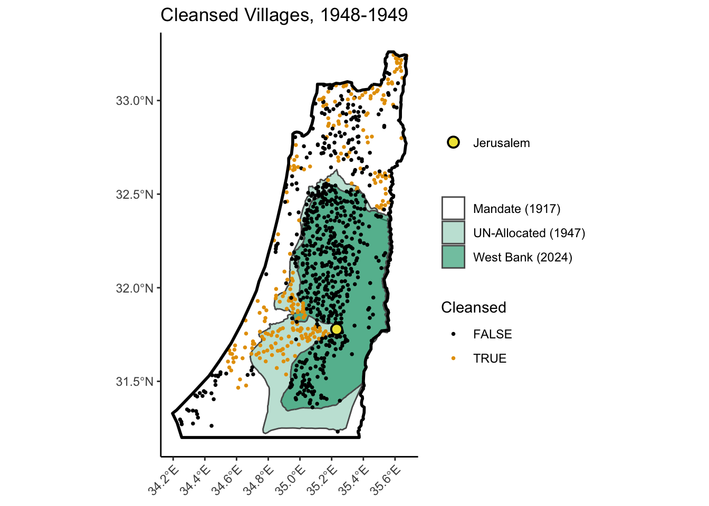

HW4: International Borders and the Ethnic Cleansing of Palestine
PPOL 6805 / DSAN 6750: GIS for Spatial Data Science
Author
Your Name Here
Overview
You may have noticed, in the news, the “sudden” eruption of violence between the Israeli Defense Forces (IDF) and the al-Qassam Brigades (the armed wing of Hamas, the democratically-elected government of the Occupied Palestinian Territories).
In this bonus homework you will use spatial point pattern analysis to understand a key piece of historical context which lies at the root of the present-day conflict, namely, the ethnic cleansing of Palestinian-populated villages in 1948, and Israel’s subsequent refusal to allow refugees from these villages to return to their homes, in violation of Article 49 of the Fourth Geneva Convention, the document which forms the basis for much of modern international law (see, e.g. the 1998 Rome Statute of the International Criminal Court).
The centrality of this event for Palestinian refugees (who call it al-Nakba, or “The Catastrophe”), and the importance of the Right to Return to their everyday lives, becomes immediately viscerally clear as you approach the UN-administered Aida camp in Beit Lahm, for example (the first refugee camp I ever worked in), and walk underneath the large key of return erected above its entrance Figure 1.
Figure 1
Given that participants in armed attacks against Israeli occupying forces are disproportionately recruited from these very camps, understanding this linkage between al-Nakba and the present is crucial for understanding the conflict.
The data we’ll be using can be understood through three key dates in this era of the conflict:
29 November 1947: The UN announces its partition plan for the former British Mandate of Palestine
15 May 1948: The armed Jewish groups throughout the former mandate declare independence for the State of Israel
3 April 1949: Israel signs an armistice agreement with the Hashemite Kingdom of Jordan, leaving much of the present-day West Bank under Jordanian sovereignty (until its invasion and occupation by the IDF in 1967, which lasts to the present day)
These three dates will “bookend” our hypotheses here, since the historiography of al-Nakba often involves debate around the following basic chronology:
From 29 November 1947 until 15 May 1948, the Haganah (see below) conducted a campaign of terror and ethnic cleansing against Palestinian-populated villages, mainly targeting those located within the Jewish areas of the UN Partition Plan
From 15 May 1948 until 3 April 1949, the IDF (see below again) conducted another campaign of terror and ethnic cleansing against Palestinian-populated villages, this time targeting those between the borders at the time of the declaration of independence and Jerusalem, the envisioned capital of Eretz Israel (“Greater Israel”) in the eyes of the Zionist movement.
Before you begin, make sure to run the following code cell, which:
Sets R’s random seed,
Loads the libraries we’ll use,
Defines a colorblind-friendly palette, and
Defines a constant raster_eps which we’ll use to determine the resolution of our intensity function estimates
Also, importantly, it switches offsf’s \(S^2\) (spherical geometry) mode, since the UN shapefiles here are incompatible with this mode (for reasons outlined here). Lastly, it defines a constant raster_eps
Here, to avoid the midterm situation where loading and cleaning took up nearly the whole time for most students (😭), we carry out the data loading and cleaning for you!
First, we download, unzip, and load the shapefile for the British Mandate of Palestine, as it was constituted in British colonial documents in 1948, on the eve of its (planned) transfer to UN jurisdiction. Since the shapefile corresponds to the Mandate’s border as it was defined earlier on by the League of Nations, we get a LINESTRING, which we convert to the POLYGON of the mandate using st_cast():
jpr_shapefile_url <-"https://github.com/jpowerj/dsan-content/raw/refs/heads/main/2024-fall-ppol6805/hw5a/jpr_data.zip"download.file(jpr_shapefile_url, destfile ="jpr_data.zip", quiet =TRUE)unzip("jpr_data.zip")# Delete the Mac OSX metadataunlink("__MACOSX", recursive =TRUE)
Next, we load the dataset on villages in 1947 from McAlexander (2023), where the resulting plot indicates the villages cleansed in each of the two durations mentioned above:
As you can see from this overlay, however, there are no recorded villages in the southern ~half of the Mandate territory. Condensing lots of details, this is not because there were no people in this portion, but because this southern portion was mainly populated by “Negev Bedouin”, who typically practiced nomadic herding/agriculture rather than settling in one fixed location—which is why it’s important to keep in mind that the unit of analysis here is villages, not people!
Given that the ethnic cleansing of the Bedouin from Mandate Palestine followed its own, somewhat separate trajectory, we will focus in on the non-Bedouin Palestinian villages, and thus take our window of observation to be the northern portion of the Mandate, with the Palestinian village of Bir Seb’a (بئر السبع) as the “cutoff” point, below which there are no recorded villages in the data:
Part 1: Cleansing by the Yishuv, 29 Nov 1947 to 15 May 1948
Background
The “Yishuv” (ישוב), Hebrew for “Settlement”, is a general term used to refer to the Jewish population of Ottoman (1881-1917) and British (1917-1948) Palestine, which increased dramatically between the First Aliyah (i.e., the first wave of European Jewish settlement in Palestine) onwards and the establishment of Israel on 15 May 1948, at which point various armed paramilitary groups of the Yishuv were unified to form the Israeli Defense Forces (IDF), the national army of the newly-formed State of Israel.
The reason we distinguish between the Yishuv groups and the IDF is precisely because of the tenets of international law (as described by the Fourth Geneva Convention) mentioned above: before 15 May 1948, these groups operated as non-state paramilitary forces within territory under British sovereignty, and therefore had a different legal status from the post-May 15th IDF, which obtained the legal status of “official” state military (once Israel signed the Geneva Conventions and had its military and borders subsequently recognized by, e.g., the US, UK, USSR, and so on, leading to their accession to the United Nations less than a year later, on 11 May 1949).
As mentioned above, 29 Nov 1947 is our first key date, since it is the day that the UN Partition Plan for Palestine was announced. Skipping lots of details (as in pretty much every part of this assignment, so I’ll stop providing this disclaimer from now on!): although the surrounding Arab nations rejected the UN plan, the Yishuv accepted it and recognized it as a crucial opportunity to gain international legitimacy as a soon-to-be nation-state.
However, in the eyes of Yishuv leaders like David Ben-Gurion (who would become Israel’s first Prime Minister), this presented a dilemma:
A key precondition of this international legitimacy would be to establish Israel as a “democratic” state (and thus qualify for the post-WWII reconstruction efforts being granted to the “free world” by the United States, a la the Marshall Plan), but…
The goal of Zionism, since its inception, had been an ethnostate in Palestine: i.e., a state wherein the Jewish population held uncontested control over all political, economic, and military decisions.
The second point is perhaps best summarized by Ben-Gurion himself:
In the area allocated to the Jewish State [in the UN plan mentioned above] there are not more than 520,000 Jews and about 350,000 non-Jews, mostly Arabs. Such a population composition does not provide a stable basis for a Jewish State. With such a composition, there cannot even be absolute certainty that control will remain in the hands of the Jewish majority […] There can be no stable and strong Jewish state so long as it has a Jewish majority of only 60%. (Source: Downes (2004), Targeting Civilians in War)
The Hypothesis
Given this dilemma, a natural hypothesis would be that the announcement of the UN plan would spark a campaign of intensified ethnic cleansing by the armed groups of the Yishuv, aiming to drive Palestinians out of villages within the UN-allotted Jewish region until a “safe” Jewish majority (well above the “only 60%” mentioned in the above quote) could be secured, at which point independence could be declared for a democratic State of Israel. And indeed, Ben-Gurion would refer to this goal somewhat indirectly as the “transfer process”, a process which was codified in Plan Dalet and explored in McAlexander (2023), the article from which our dataset is drawn.
The operationalization of this hypothesis in terms of the data we have, therefore, would involve the null hypothesis that
Villages were cleansed in proportion to their density across the Mandate, regardless of their position within or outside of the UN-allotted Jewish region
which we compare with the alternative hypothesis that
Villages within the UN-allotted Jewish region were disproportionately likely to be chosen for cleansing,
i.e., that their probability of being chosen for cleansing was greater than their spatial density with respect to the distribution of villages across the Mandate.
To test this hypothesis, we will need to load the shapefiles corresponding to the UN partition plan, which are again helpfully provided by McAlexander (2023), in the form of the shapefiles for the UN-allotted Palestinian region specifically (the Jewish region being everything in the Mandate besides this territory and besides Jerusalem, which was to be internationally administered by the UN, which we’ll see in Part 2 below). Then we plot the villages cleansed from 29 Nov 1947 to 15 May 1948, the points which we’ll test for disproportionate appearance in the UN-allotted Jewish region:
We start by computing the observed spatial distribution of (phase-1) cleansed villages, in terms of how many such villages were located in the UN-allotted Jewish and Palestinian regions, respectively. The following plot, therefore, represents the point pattern we’re hoping to test, in terms of how likely it would be to occur under our null hypothesis:
north_sf, containing a POLYGON representing the northern ~half of the British Mandate of Palestine,
un_pal_north_sf, containing MULTIPOLYGON representing the UN-allotted Palestinian regions, and
vill_c4748_sf, containing POINTs representing the villages cleansed by the Yishuv from 29 Nov 1947 to 15 May 1948,
Your goal is to compute the counts of how many villages in vill_c4748_sf fall within the UN-allotted Palestinian region and how many do not fall within this region.
Since we are interested in the hypothesis that the number of cleansed villages in the UN-allotted Jewish region is disproportionate, we will use this number specifically as our test statistic: store this value in a variable named obs_nc4748_in_jewish.
TipImplementing a Count Function
Though it’s not required, it will save you time later on if you implement this by creating a function named compute_sf_jewish_count(), which takes in an sf object containing POINTs and returns the number of these points that fall outside of un_pal_north_sf.
Though it requires more thought up-front, it will pay off when you construct the large number of Monte Carlo simulations in Questions 1.3 and 1.4, since you can convert these simulated ppp objects into sf objects (making sure to filter out the window and keep only the simulated POINT observations!), then use this function to compute counts for each simulation.
# Your code here# Recommended, not required: a function for computing this countcompute_sf_jewish_count <-function(village_sf) {# Your (optional) code here: compute the number of points in village_sf lying# outside of un_pal_north_sf.return(NULL)}# Replace with count of cleansed villages in Jewish regionobs_num_jewish_region <-NULL
You should obtain the result that 159 villages, out of the 190 total that were cleansed between 29 Nov 1947 and 15 May 1948, were located within the UN-allotted Jewish region. In the remaining questions, you will compare this count with counts obtained via simulation under the null hypothesis.
Question 1.2: Village Intensity Function
Now that you have the observed count of how many of the 190 villages chosen for cleansing fell within the UN-allotted Jewish region, we need to evaluate whether this is higher or lower than the count we would expect to see under our null hypothesis!
To this end, the first step is to estimate an intensity function of villages across the Mandate territory as they existed in 1947, which will then allow us to simulate the spatial distribution of villages under the null, i.e., simulate what a choice of villages not affected by the UN partition plan would look like. Estimate this intensity function using the density() function from spatstat.random, and store the estimated intensity function in a variable named vill_47_int.
Remember to use the raster_eps global parameter defined at the top of the notebook for the eps parameter of density()! Otherwise the estimated intensity function might be too coarse (too pixelated) or, even worse, too fine-grained (which might lead to your RAM quickly filling up).
vill_47_int <-NULL# Replace with call to
Question 1.3: Simulated Region Counts
Now that you have an intensity function for villages throughout the north of the Mandate, you have what you need to use the spatstat.random::rpoint() function to simulate 190 points drawn from this intensity function! Do this in the following code cell, saving the resulting ppp object as vill_c4748_sim_ppp (with this name chosen since we’re simulating the locations of cleansed villages between 29 Nov 1947 and 15 May 1948 under the null hypothesis):
vill_c4748_sim_ppp <-NULL# Replace with rpoint() call
If your ppp object was created as intended, running the following code cell should produce a plot of these simulated villages overlaid on the 1947 village intensity function, which you can use as a “sanity check” (for example, if you observe a large number of villages in the blue low-intensity regions, something may be wrong with your call to rpoint()):
if (!is.null(vill_c4748_sim_ppp)) { vill_47_int_stars <- stars::st_as_stars(vill_47_int) vill_c4748_sim_points_sf <- vill_c4748_sim_ppp |> sf::st_as_sf() |> sf::st_set_crs(3857) |>filter(label =="point")ggplot() +geom_stars(data=vill_47_int_stars) +geom_sf(data=vill_c4748_sim_points_sf, size=0.65) +geom_sf(data=un_pal_north_sf, alpha=0.4) +theme_classic() +scale_fill_viridis_c(option="C", na.value="transparent") +theme(axis.text.x =element_text(angle =45, vjust =1, hjust=1)) +labs(title ="190 Intensity-Sampled Villages")} else {writeLines("vill_c4748_sim_ppp object must be created first!")}
vill_c4748_sim_ppp object must be created first!
Question 1.4: Computing the Test Statistic
Given the resulting ppp object, you should be able to use code similar to the code you wrote in Question 1.1 to count the number of points in vill_47_sim_ppp that fall within the UN-allotted Jewish region of the Mandate. Store this value in a variable named sim_c4748_points and print its value at the end of your code cell.
# Your code here
You should find that the number of simulated points falling within the UN-allotted Jewish region is lower than the observed number you computed at the end of Question 1.1.
This gives us a… small hint that 159 might be a high number of villages, but we can’t evaluate the hypothesis on the basis of a single counterfactual simulation! The main point of this question, secretly, was to get you into the habit of writing code for a single simulation, and then plotting the results as a sanity-check that it works, before you think about running 999 of them.
Question 1.5: Monte Carlo Hypothesis Testing
Here, your job is to just take the simulation code that you’ve now used to generate one simulation and run it 999 times, to generate 999 ppp objects and then extract the count of the number of cleansed villages in the UN-allotted Jewish area from each. Like in the midterm, this will give you a distribution of test statistics that you can use to judge how unlikely it would be to observe 159 cleansed villages within the UN-allotted Jewish region under the null hypothesis.
So, in the following code cell: compute these 999 simulations, derive the test statistic for each, and then use ggplot2 to create a density plot (using geom_density()) of the 999 simulated test statistics, on top of which you should superimpose a dashed line (preferably with the color from the first element of cb_palette) representing the observed test statistic of 159, to see how likely or unlikely this value would be under the null hypothesis.
As I’ve mentioned (ranted about) in class, you don’t need to compute a \(p\)-value or confidence interval here. But, below the produced density plot, please provide a sentence or two describing your inference from the plot, in terms of the likelihood that the null hypothesis is true.
# Your code here
Part 2: Cleansing by the IDF, 15 May 1948 to 3 Apr 1949
Background
Once Israel had established itself as a democracy and signed onto the Fourth Geneva Convention, as mentioned above, the borders of the UN-allotted Jewish territory were accepted as the borders of the State of Israel by great powers like the US, UK, and USSR. However, the rejection of the plan by the surrounding Arab nations provided the newly-formed state with a fait accompli to conduct a second phase of the ethnic cleansing campaign, which could now be justified as essentially a “side effect” of the inter-state wars between Israel and, for example:
Lebanon to the north,
Egypt to the southwest (resulting in Egyptian sovereignty over the Gaza Strip), and
Jordan to the east (resulting in Jordanian sovereignty over the West Bank).
Here we will focus on the war with Jordan in particular, for reasons that will become apparent once you visualize the spatial distribution of these phase-2 cleansed villages.
After dropping the villages which had already been cleansed in the first phase (before 15 May 1948), a plot of those cleansed in this second phase immediately gives rise to a plausible hypothesis for their spatial distribution, revolving around the location of Jerusalem within the Jordanian-claimed portion of the UN-allotted Palestinian region.
# Drop phase-1 cleansed villagesvill_48_sf <- vill_47_sf |>filter(!cleansed_yish_4748)# Load POLYGON for Jordan-claimed portionjord_url <-"https://github.com/jpowerj/dsan-content/raw/refs/heads/main/2024-fall-ppol6805/hw5a/un_jordan_claimed.gpkg"jord_sf <- sf::st_read(jord_url)
Reading layer `un_jordan_claimed' from data source
`https://github.com/jpowerj/dsan-content/raw/refs/heads/main/2024-fall-ppol6805/hw5a/un_jordan_claimed.gpkg'
using driver `GPKG'
Simple feature collection with 1 feature and 1 field
Geometry type: POLYGON
Dimension: XY
Bounding box: xmin: 34.68605 ymin: 31.22123 xmax: 35.58035 ymax: 32.63122
Geodetic CRS: WGS 84
# Load POLYGON for 2024 West Bankwb_url <-"https://github.com/jpowerj/dsan-content/raw/refs/heads/main/2024-fall-ppol6805/hw5a/un_ocha_west_bank.gpkg"wb_sf <- sf::st_read(wb_url)
Reading layer `un_ocha_west_bank' from data source
`https://github.com/jpowerj/dsan-content/raw/refs/heads/main/2024-fall-ppol6805/hw5a/un_ocha_west_bank.gpkg'
using driver `GPKG'
Simple feature collection with 1 feature and 10 fields
Geometry type: POLYGON
Dimension: XY
Bounding box: xmin: 34.88054 ymin: 31.34269 xmax: 35.57319 ymax: 32.55239
Geodetic CRS: WGS 84
# Create sf containing a POINT corresponding to the centroid of the Old Cityjeru_df <- tibble::tribble(~lat, ~lon,31.777908401571544, 35.23166035886802)jeru_sf <- jeru_df |> sf::st_as_sf(coords=c("lon","lat"),crs=4326) |> sf::st_transform(3857)
And, by overlaying the POLYGON for the modern (2024) West Bank, you can also see how these IDF cleansings essentially determined the final armistice line which divides Israel from the Occupied West Bank to this day:
gen_p2_plot(include_wb=TRUE)

The Hypothesis
Though the UN Partition Plan designated Jerusalem as an internationally-administered territory (rather than placing it within the Jewish or Palestinian “sides”), our hypothesis for the second phase is that the IDF wanted to clear a “road to Jerusalem” from the newly-formed State of Israel, as proposed by (newly-elected Prime Minister) David Ben-Gurion:
If we defeat them and capture western Galilee or territory on both sides of the road to Jerusalem, these areas will become part of the state. Why should we obligate ourselves to accept boundaries that in any case the Arabs don’t accept?”
Cleansing the villages which had the misfortune of existing on this “road to Jerusalem” would, ostensibly, make it easier to wrest Jerusalem from international or Jordanian control via military conquest, which was indeed achieved 19 years later.
Thus our null hypothesis in this part is that:
Villages were cleansed in proportion to their density within the Jordanian-claimed portion of the UN-allotted Palestinian region, regardless of their distance to Jerusalem
which we compare with the alternative hypothesis that
Villages closer to Jerusalem were disproportionately likely to be chosen for cleansing.
To test this hypothesis, like on the midterm and the previous problem, your job is to conduct 999 Monte Carlo simulations of the null hypothesis, and see how different the observed average distance from Jerusalem is from the 999 simulated average distances.
Notice that our observation window here is different from the previous part: wheres before we were considering the British Mandate territory as a whole, here we are “zooming in” on just the Jordanian-claimed portion of the UN-allotted Palestinian region. The following code cells set up the necessary sf objects that you’ll use for the remainder of the questions.
First, the collection of all villages in the Jordanian-claimed region (the observation window for this question), which you’ll use to estimate a new “village intensity function” for this hypothesis:
# All remaining (non-previously-cleansed) villages in Jordanian-claimed regionvill_jord_sf <- vill_48_sf |> sf::st_filter(jord_sf)
although coordinates are longitude/latitude, st_intersects assumes that they
are planar
although coordinates are longitude/latitude, st_intersects assumes that they
are planar
And now the subset of just the post-15 May 1848 cleansed villages, the observed point pattern that you will test on the basis of the village intensity function:
Your job in this question is to compute the observed test statistic: in this case, the mean distance between the cleansed villages and the centroid of the Old City of Jerusalem. You can call this obs_mean_dist.
obs_mean_dist <-NULL# Replace with computation of observed mean distance
You should obtain a value of about 30843.81. Is this low or high? Let’s use point-process simulation to check!
Question 2.2: Village Intensity Function
Like in the Question 1.2, your job here is to use the collection of all remaining villages within the Jordanian-claimed region (the points stored in vill_jord_sf above) to estimate and plot an intensity function, which you should call vill_jord_int.
And, as in Question 1.2 again, please make sure to use the eps parameter when you call density() to ensure a reasonable level of resolution for the (raster-data) intensity function.
vill_jord_int <-NULL# Replace with density() call
Question 2.3: Simulated Points
Here, as you did in Question 1.3, use the estimated intensity function vill_jord_int to simulate num_c4849 points (num_c4849 is defined above, in the code cell with label q2-cleansed-villages), and store the results of this simulation in a ppp object named vill_c4849_sim_ppp.
vill_c4849_sim_ppp <-NULL# Replace with density() call
Like in Question 1.3, if the intensity function was estimated correctly and the simulation ran as intended, the following code cell should plot the simulated points in vill_c4849_sim_ppp over top of the heatmap based on vill_jord_int, as a sanity check (you can run the q2-3-response code cell and then the following code multiple times, for example, to make sure that points tend to be generated in the regions with greater intensity!)
if (!is.null(vill_c4849_sim_ppp)) { vill_jord_int_stars <- stars::st_as_stars(vill_jord_int) vill_c4849_sim_points_sf <- vill_c4849_sim_ppp |> sf::st_as_sf() |> sf::st_set_crs(3857) |>filter(label =="point")ggplot() +geom_stars(data=vill_jord_int_stars) +geom_sf(data=vill_c4849_sim_points_sf, size=0.65) +theme_classic() +scale_fill_viridis_c(option="C", na.value="transparent") +theme(axis.text.x =element_text(angle =45, vjust =1, hjust=1)) +labs(title ="100 Intensity-Sampled Villages")} else {writeLines("vill_c4849_sim_ppp object must be created first!")}
vill_c4849_sim_ppp object must be created first!
Question 2.4: Computing the Test Statistic
This is where your code will start to differ from the code in Question 1. Here, your job is to compute the new distance-based test statistic in this part–the mean distance from the simulated villages to Jerusalem—for the simulated ppp object you just created. Store this value in a variable named sim_c4849_mean and print its value at the end of your code cell.
# Your code heresim_c4849_mean <-NULL# Replace with calculated mean distance from Jerusalemprint(sim_c4849_mean)
NULL
Once again, you should get a mean distance here that is lower than the observed mean distance, but (as before) we can’t evaluate the hypothesis on the basis of a single counterfactual simulation! So, in the next question, you will re-run this simulation, 999 times, and then create a density plot to see how likely or unlikely our observed value of 30843.81 is relative to the mean distances resulting from these 999 simulations.
Question 2.5: Monte Carlo Hypothesis Testing
Here, like in Question 1.5, your job is to just take the simulation code that you’ve now used to generate one simulation and run it 999 times, computing the mean distance from Jerusalem for each (on the basis of the centroid in jeru_sf).
Like in Question 1.5, this will give you a distribution of test statistics that you can use to judge how unlikely it would be to observe a mean distance of 30843.81 under the null hypothesis.
So, in the following code cell: compute these 999 simulations, derive the test statistic for each, and then use ggplot2 to create a density plot (using geom_density()) of the 999 simulated test statistics, on top of which you should superimpose a dashed line (preferably with the color from the first element of cb_palette) representing the observed test statistic of 30843.81, to see how likely or unlikely this value would be under the null hypothesis.
As before, you don’t need to compute an exact \(p\)-value or confidence interval here. But, below the produced density plot, please provide a sentence or two describing your inference from the plot, in terms of the likelihood that the null hypothesis is true.
# Your code here
Thank you for your work! As with all of the other assignments, I hope they can be helpful as e.g. starter code for stuff you may find yourself working on in the future 🏃